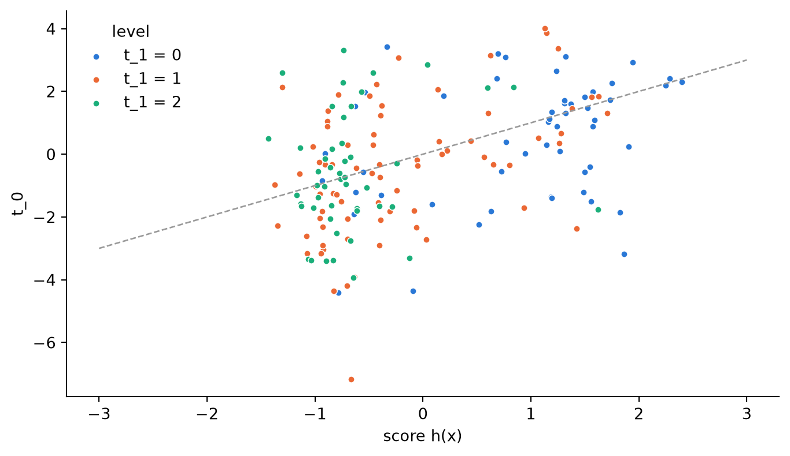
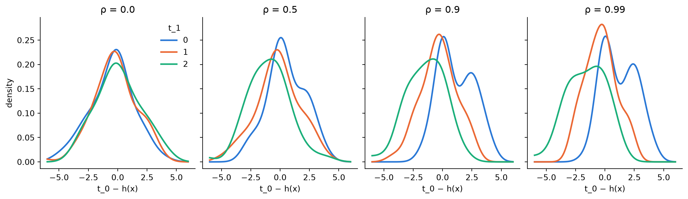
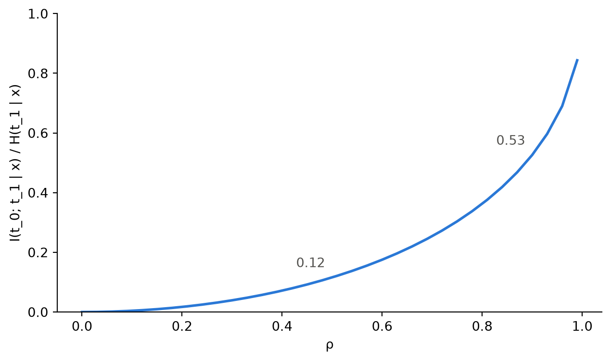
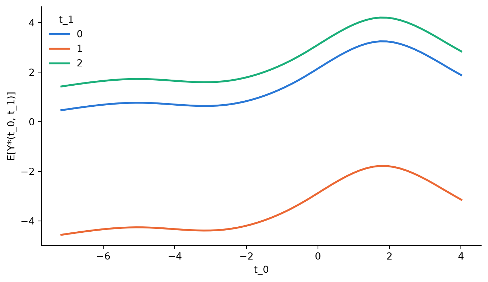
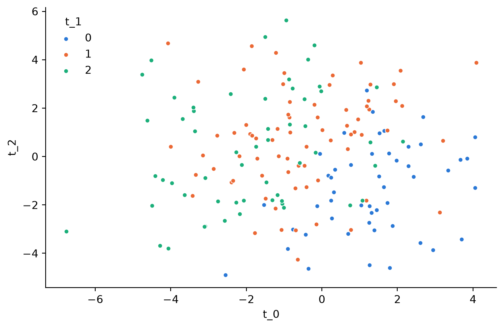

flowchart LR
X["Real covariates X"] --> C["Fitted classifier p̂(· | x)"]
C --> H["Score h(x)<br/>standardized log-odds"]
C --> F["Propensity p̂(· | x)"]
Z["Latents (ε, Z) ~ N(0, R)<br/>R has off-diagonal ρ"] --> T0
Z --> T1
H --> T0["t_0 = h(x) + σ ε"]
F --> T1["t_1 = F⁻¹(1 − Φ(Z) | x)"]
T0 --> Y["y = h(x) + g₀(t_0) + g₁(t_1) + noise"]
T1 --> Y
ModelInducedConfounding turns one real classification table into a mixed-treatment causal dataset with a known response surface. Use it when you want to study how an estimator copes with dependent treatment coordinates while keeping real covariates.
NoteWhat you control
treatment_types: which coordinates exist, each"continuous"or"categorical".treatment_correlation: the knob \(\rho\) for how much the coordinates depend on each other given the covariates. Zero means they factorize; one means one coordinate is a deterministic function of the other.treatment_noise_scale: how much overlap the continuous coordinates have.
How the dataset is built
One classifier is fitted on the source covariates \(X\) and its class label. Its fitted probabilities \(\hat p(\cdot \mid x)\) supply everything:
The two treatment coordinates already share the covariate channel through \(h(x)\) and \(\hat p(\cdot \mid x)\). The latents add dependence beyond that channel, and \(\rho\) is their correlation. Because \(\Phi(Z)\) is uniform for any \(\rho\), the categorical coordinate keeps the propensity \(\hat p(\cdot \mid x)\) exactly, whatever the knob is set to.
Step 1: Build the dataset
Code
import numpy as np
import polars as pl
import matplotlib.pyplot as plt
from scipy.special import ndtr, ndtri
from scipy.stats import gaussian_kde
from sklearn.linear_model import LogisticRegression
from skcausal.datasets import ModelInducedConfounding, SklearnDataset
LEVEL_COLORS = ["#2a78d6", "#eb6834", "#1baf7a"]
plt.rcParams.update({"axes.spines.top": False, "axes.spines.right": False})The source is scikit-learn’s wine table, with three classes. A regularized classifier keeps the propensity away from 0 and 1, which is what gives the categorical coordinate any overlap at all.
def make_dataset(rho=0.0, **kwargs):
return ModelInducedConfounding(
classifier=LogisticRegression(max_iter=2000, C=0.01),
dataset=SklearnDataset(name="wine"),
treatment_correlation=rho,
random_state=7,
**kwargs,
)
dataset = make_dataset(rho=0.0)
X, t, y = dataset.load()
t.head()
shape: (5, 2)
| t_0 | t_1 |
|---|---|
| f64 | cat |
| 1.73823 | "0" |
| 0.524707 | "1" |
| 0.356005 | "1" |
| 2.406096 | "0" |
| -0.332792 | "1" |
The categorical levels come from the source target, so t_1 has the three wine classes. They are not a parameter.
dataset.treatment_levels_['0', '1', '2']Step 2: See where the coordinates come from
The continuous coordinate is the standardized reference-class log-odds plus assignment noise. Recomputing that score from the fitted classifier lets us look at the pieces separately.
def score(dataset, X):
"""Standardized reference-class log-odds h(x), as in the docstring."""
p = np.clip(dataset.classifier_.predict_proba(X.to_numpy())[:, 0], 1e-6, 1 - 1e-6)
logit = np.log(p) - np.log1p(-p)
return (logit - logit.mean()) / logit.std()
h = score(dataset, X)fig, ax = plt.subplots(figsize=(7, 4), constrained_layout=True)
labels = t.get_column("t_1").cast(pl.Utf8).to_numpy()
for level, color in zip(dataset.treatment_levels_, LEVEL_COLORS):
mask = labels == level
ax.scatter(h[mask], t.get_column("t_0").to_numpy()[mask], s=18, color=color,
edgecolor="white", linewidth=0.6, label=f"t_1 = {level}")
ax.plot([-3, 3], [-3, 3], color="#9a9a9a", linewidth=1, linestyle="--")
ax.set_xlabel("score h(x)")
ax.set_ylabel("t_0")
ax.legend(frameon=False, title="level")
plt.show()
This is the dependence the covariates induce on their own. It is present at every \(\rho\), including zero.
Step 3: The \(\rho\) knob
What \(\rho\) changes is the relation between the coordinates after the covariates are accounted for. The cleanest way to see it is to subtract the score from t_0 and look at what is left, per level.
def residuals_by_level(rho):
d = make_dataset(rho=rho)
X, t, _ = d.load()
r = t.get_column("t_0").to_numpy() - score(d, X)
return r, t.get_column("t_1").cast(pl.Utf8).to_numpy(), d.treatment_levels_rhos = [0.0, 0.5, 0.9, 0.99]
fig, axes = plt.subplots(1, len(rhos), figsize=(12, 3.4), sharey=True, constrained_layout=True)
grid = np.linspace(-6, 6, 200)
for ax, rho in zip(axes, rhos):
r, labels, levels = residuals_by_level(rho)
for level, color in zip(levels, LEVEL_COLORS):
ax.plot(grid, gaussian_kde(r[labels == level])(grid), color=color, linewidth=2, label=level)
ax.set_title(f"ρ = {rho}")
ax.set_xlabel("t_0 − h(x)")
axes[0].set_ylabel("density")
axes[0].legend(frameon=False, title="t_1")
plt.show()
Measuring the dependence exactly
Because the assignment law is known, the conditional dependence can be computed rather than estimated. The quantity below is the mutual information between the two coordinates given \(x\), divided by the entropy of the categorical coordinate given \(x\), averaged over the rows. It is 0 when \(p(t_0, t_1 \mid x)\) factorizes and 1 when \(t_1\) is determined by \(t_0\) and \(x\).
Code
def conditional_dependence(dataset, X, rho):
"""Exact I(t_0; t_1 | x) / H(t_1 | x), averaged over the rows of X."""
P = dataset.classifier_.predict_proba(X.to_numpy())
cum = np.cumsum(P, axis=1)
top = np.hstack([np.zeros((len(P), 1)), cum[:, :-1]])
hi = ndtri(np.clip(1 - top, 1e-12, 1 - 1e-12))
lo = ndtri(np.clip(1 - cum, 1e-12, 1 - 1e-12))
nodes, weights = np.polynomial.hermite_e.hermegauss(60)
s = np.sqrt(1 - rho**2)
entropy_given_noise = np.zeros(len(P))
for e, w in zip(nodes, weights / weights.sum()):
q = ndtr((hi - rho * e) / s) - ndtr((lo - rho * e) / s)
entropy_given_noise += w * -(np.where(q > 0, q * np.log(np.where(q > 0, q, 1)), 0)).sum(axis=1)
entropy = -(P * np.log(P)).sum(axis=1)
return float(np.mean((entropy - entropy_given_noise) / entropy))rho_grid = np.linspace(0, 0.99, 34)
dependence = [conditional_dependence(dataset, X, rho) for rho in rho_grid]
fig, ax = plt.subplots(figsize=(6.5, 3.8), constrained_layout=True)
ax.plot(rho_grid, dependence, color=LEVEL_COLORS[0], linewidth=2)
for rho in (0.5, 0.9):
ax.annotate(f"{conditional_dependence(dataset, X, rho):.2f}", (rho, conditional_dependence(dataset, X, rho)),
xytext=(-28, 8), textcoords="offset points", color="#52514e")
ax.set_xlabel("ρ")
ax.set_ylabel("I(t_0; t_1 | x) / H(t_1 | x)")
ax.set_ylim(0, 1)
plt.show()
TipReporting dependence in an experiment
Sweep treatment_correlation and report this conditional measure on the x-axis. Do not report the marginal association of the released columns: it includes the covariate channel from Step 2, which never vanishes and is not what \(\rho\) controls.
The propensity stays put
Whatever \(\rho\) is, the categorical coordinate is drawn from the fitted class distribution. The observed level frequencies track the mean propensity at every setting.
rows = []
for rho in (0.0, 0.9):
d = make_dataset(rho=rho)
X_rho, t_rho, _ = d.load()
labels = t_rho.get_column("t_1").cast(pl.Utf8).to_numpy()
propensity = d.classifier_.predict_proba(X_rho.to_numpy()).mean(axis=0)
for level, p in zip(d.treatment_levels_, propensity):
rows.append({"rho": rho, "level": level, "observed": np.mean(labels == level), "propensity": p})
pl.DataFrame(rows)
shape: (6, 4)
| rho | level | observed | propensity |
|---|---|---|---|
| f64 | str | f64 | f64 |
| 0.0 | "0" | 0.297753 | 0.331477 |
| 0.0 | "1" | 0.432584 | 0.398859 |
| 0.0 | "2" | 0.269663 | 0.269664 |
| 0.9 | "0" | 0.292135 | 0.331477 |
| 0.9 | "1" | 0.410112 | 0.398859 |
| 0.9 | "2" | 0.297753 | 0.269664 |
Step 4: The response surface
The outcome is additive in the coordinates: the score, a random spline in t_0, and a random offset per level of t_1. get_grid crosses the continuous range with every level, and predict_curve averages the true response over the covariates.
grid = dataset.get_grid(60)
truth = dataset.predict_curve(X, grid)fig, ax = plt.subplots(figsize=(7, 4), constrained_layout=True)
for level, color in zip(dataset.treatment_levels_, LEVEL_COLORS):
mask = grid.get_column("t_1").cast(pl.Utf8).to_numpy() == level
ax.plot(grid.get_column("t_0").to_numpy()[mask], truth[mask], color=color, linewidth=2, label=level)
ax.set_xlabel("t_0")
ax.set_ylabel("E[Y*(t_0, t_1)]")
ax.legend(frameon=False, title="t_1")
plt.show()
predict_y gives the noise-free potential outcome for any covariate row and any treatment table, so counterfactual contrasts are exact:
at_reference = dataset.predict_y(X, t.with_columns(pl.lit("0").alias("t_1")))
at_last = dataset.predict_y(X, t.with_columns(pl.lit("2").alias("t_1")))
float((at_reference - at_last).mean())-0.9588244702615097To estimate this surface from (X, t, y), hand the three tables to any estimator that accepts a mixed treatment table. The multidimensional treatments tutorial walks through that with the same column layout.
Step 5: More than two coordinates
treatment_types lists the coordinates and treatment_correlation becomes a correlation matrix over their latents. Continuous coordinates after the first use the log-odds of the next classes.
wide = make_dataset(
treatment_types=["continuous", "categorical", "continuous"],
rho=[[1.0, 0.6, 0.0], [0.6, 1.0, -0.5], [0.0, -0.5, 1.0]],
)
X_wide, t_wide, _ = wide.load()
t_wide.head()
shape: (5, 3)
| t_0 | t_1 | t_2 |
|---|---|---|
| f64 | cat | f64 |
| 1.73823 | "0" | -1.920213 |
| -0.708201 | "1" | -1.299576 |
| 1.385634 | "0" | -3.043054 |
| 1.044859 | "0" | -2.010092 |
| 0.86245 | "1" | 1.012084 |
fig, ax = plt.subplots(figsize=(6.5, 4.2), constrained_layout=True)
labels = t_wide.get_column("t_1").cast(pl.Utf8).to_numpy()
for level, color in zip(wide.treatment_levels_, LEVEL_COLORS):
mask = labels == level
ax.scatter(t_wide.get_column("t_0").to_numpy()[mask], t_wide.get_column("t_2").to_numpy()[mask],
s=18, color=color, edgecolor="white", linewidth=0.6, label=level)
ax.set_xlabel("t_0")
ax.set_ylabel("t_2")
ax.legend(frameon=False, title="t_1")
plt.show()
The grid grows multiplicatively: n points per continuous coordinate times the level count per categorical one.
wide.get_grid(10).height300
WarningTwo settings that break overlap
treatment_noise_scale=0makes every continuous coordinate a deterministic function of \(x\), and turns every matrix entry touching it inert.- An unregularized classifier on a nearly separable source pushes the propensity to 0 or 1, and the categorical coordinate stops varying given \(x\).